Yoga đôi · Tài liệu miễn phí
Yoga đôi: bé tập cùng bố mẹ, cô giáo và bạn
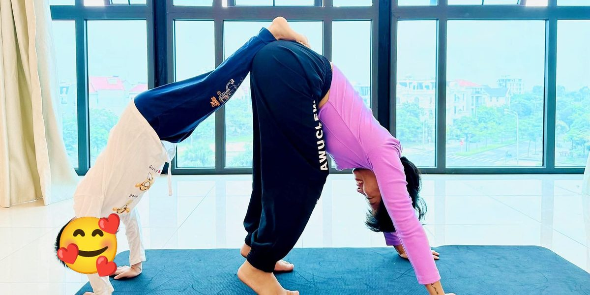
Yoga đôi là hai người cùng tập một tư thế: nắm tay nhau, tựa lưng vào nhau, làm điểm tựa cho nhau. Bé không chỉ dẻo dai hơn mà còn học cách lắng nghe, tin tưởng và giúp đỡ người bên cạnh.
1. Yoga đôi mang lại gì cho bé?
- 💞 Gắn kết: bố mẹ và con có 10 phút chạm tay, nhìn nhau, cười cùng nhau mỗi ngày.
- 🤝 Hợp tác: muốn giữ được tư thế, hai người phải cùng nhịp. Bé học chờ bạn, nhường bạn.
- ⚖️ Thăng bằng và sức khỏe: có người vịn, bé dám thử tư thế khó hơn mà vẫn an toàn.
- 🗣️ Giao tiếp: bé tập nói “con sẵn sàng”, “chậm thôi”, “dừng lại” và tôn trọng lời của bạn.
- 😊 Tự tin: bé được làm “người đỡ” cho bạn hoặc cho mẹ, thấy mình có ích.
- 🌸 Bình tĩnh: thở cùng nhịp với người lớn giúp bé dịu lại nhanh hơn khi đang hiếu động.
2. Chia vai: ai đỡ, ai làm?
🧑 Người đỡ (cột nhà)
Là người lớn, hoặc bạn lớn hơn. Đứng hoặc ngồi thật vững, giữ cổ tay bé, làm điểm tựa. Người đỡ không kéo, không đẩy, chỉ giữ yên và đếm nhịp thở.
👧 Người làm (chú chim)
Là bé. Bé làm tư thế theo sức mình, dựa vào người đỡ để giữ thăng bằng. Bé được quyền nói “dừng” bất cứ lúc nào.
- Bé với người lớn: người lớn luôn là người đỡ. Không để bé nâng hay đỡ sức nặng của người lớn.
- Hai bé với nhau: ghép hai bạn cao và nặng gần bằng nhau, chọn tư thế cân bằng hai bên. Tập xong đổi vai để bạn nào cũng được làm người đỡ.
- Cô giáo với cả lớp: cô làm mẫu với một bé trước, sau đó chia lớp thành từng đôi, cô đi quanh giúp từng đôi.
3. Nguyên tắc an toàn
- Hẹn trước tín hiệu “Dừng”: bé nói “đèn đỏ” hoặc vỗ tay hai cái, cả hai cùng dừng ngay và thả lỏng.
- Nắm cổ tay, không nắm ngón tay để không bị trượt tay hay đau khớp.
- Không kéo giật, không ấn lên lưng, gối của bé. Mọi chuyển động đều chậm, theo hơi thở.
- Tư thế nâng bé lên (chim bay, bé đứng trên lưng) chỉ làm khi người lớn đã tập vững, nâng thấp sát thảm, và lần đầu có người thứ hai đứng cạnh đỡ. Ở lớp mầm non đông bé, cô không làm các tư thế này.
- Tập trên thảm chống trơn, chân trần, dọn đồ chơi xung quanh, cách đôi bên cạnh ít nhất một sải tay.
- Không tập ngay sau khi ăn no (đợi khoảng 1 tiếng). Bé ốm, mệt thì nghỉ.
- Bé chỉ làm tới mức thấy dễ chịu. Nếu bé nhăn mặt, nín thở hoặc kêu đau, dừng lại và chuyển sang tư thế nghỉ.
4. Thời lượng một buổi
Gợi ý trình tự 15 phút:
- Chào nhau (1 phút): ngồi đối diện, chắp tay “Namaste”, nhìn nhau mỉm cười.
- Khởi động (2 phút): thở tựa lưng, Gương soi thần kỳ.
- Tư thế đôi (8 đến 10 phút): chọn 4 đến 8 tư thế bên dưới, xen kẽ đứng và ngồi.
- Thư giãn (2 phút): Ngôi sao đôi, nắm tay nhau thở chậm.
- Cảm ơn (1 phút): hai người ôm nhau hoặc đập tay, nói “Cảm ơn bạn đã đỡ mình!”
5. Lưu ý khi tập cho bé mầm non
- Kể chuyện, đừng ra lệnh: “Hai chú bướm đang bay” dễ làm hơn “mở gối ra”. Bé mầm non học qua trò chơi.
- Làm mẫu trước: cô và một người lớn (hoặc một bé lớn) làm mẫu, cả lớp xem rồi mới tập.
- Bé ngại chạm thì không ép: cho hai bạn cùng cầm một chiếc khăn hoặc gậy thay vì nắm tay.
- Bé chưa giữ lâu được: giữ 3 nhịp là đủ. Đếm to, hát hoặc đọc đồng dao để bé quên thời gian.
- Khen cả đôi: “Hai bạn giữ thuyền giỏi quá!” để bé hiểu thành công là của cả hai.
- Luôn đổi bên, đổi vai để cơ thể cân bằng và bé nào cũng được làm người đỡ.
6. Yoga đôi cha mẹ và con: 16 tư thế
Ảnh thật từ lớp cô Sophia. Khuôn mặt các bé trong ảnh luôn được che để bảo vệ bé.
Ở phần này người lớn luôn là người đỡ: bố, mẹ hoặc cô. Cô xếp từ dễ đến khó. Mẹ mới tập thì làm vài tư thế “Dễ” là đủ. Tư thế “Khó” cần mẹ khỏe và vững, bé nhẹ cân, và bé phải thật sự thích. Bé ngần ngại thì mình để hôm khác.
Điều cô để ý nhất: bé không nhớ mình làm đúng hay sai. Bé nhớ cảm giác được mẹ đỡ. Nhớ hơi thở của mẹ ngay sát bên. Vậy là đủ.
-
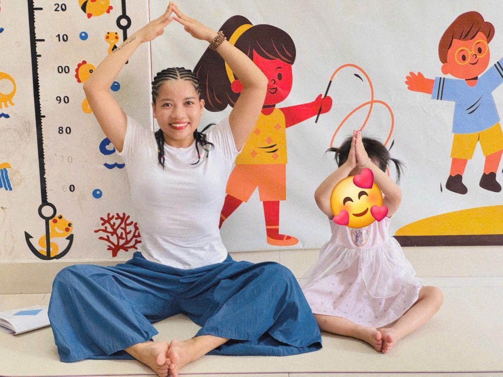
1Mái nhà nhỏ của hai mẹ con
🧘 Tư thế Ngồi chắp tay mái nhà (Seated Roof Pose)
👩👧 Bố mẹ (cô) và bé · Mức độ: Dễ
Câu hô: “Nhà mình có mái rồi. Mưa to cũng không sợ!”
Cách làm: Hai mẹ con ngồi xếp bằng cạnh nhau, lưng thẳng. Hít vào, đưa hai tay lên cao, chạm đầu ngón tay vào nhau thành một mái nhà nhọn. Ngồi yên ba nhịp thở, quay sang nhìn nhau cười. Thở ra, hạ tay xuống đầu gối.
Cô lưu ý: Cô hay mở đầu buổi tập bằng tư thế này. Bé chắp tay chưa thẳng cũng không sao, cô không sửa.
-
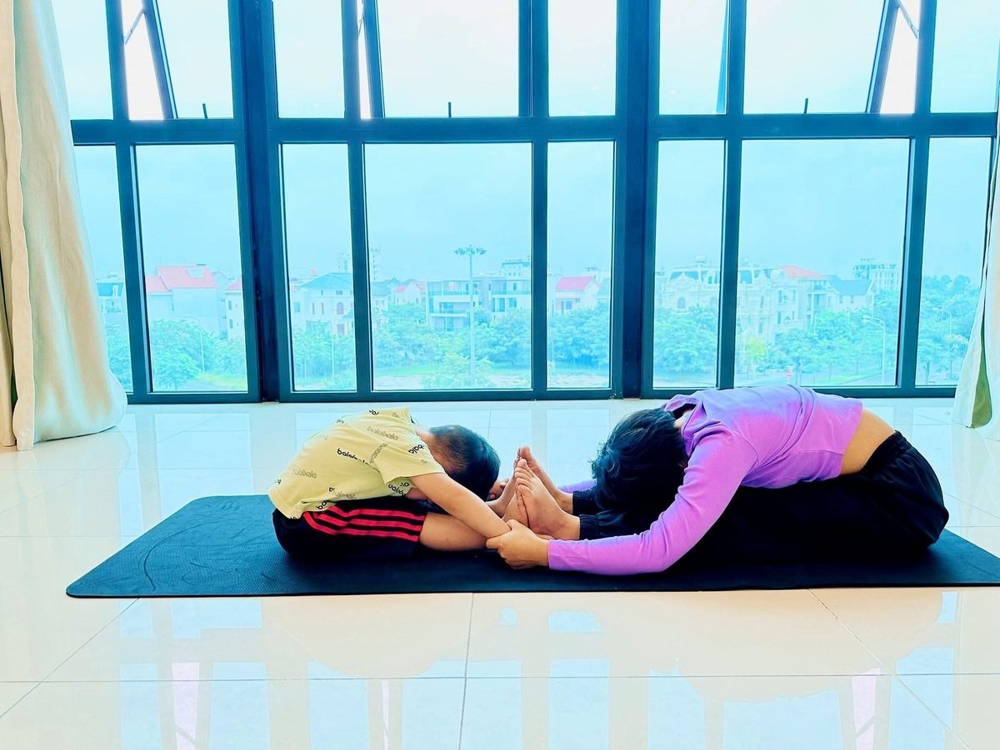
2Kéo cưa lừa xẻ
🧘 Tư thế Bập bênh đôi (Partner Seesaw)
👫 Bé + người lớn hoặc hai bé
Câu hô: “Kéo cưa lừa xẻ, ông thợ nào khỏe, về ăn cơm vua…”
Cách làm: Ngồi đối diện, duỗi chân, hai bàn chân chạm nhau (người lớn dạng chân rộng, bé ngồi giữa). Nắm cổ tay nhau. Vừa đọc đồng dao vừa đưa người qua lại: một người cúi về trước thì người kia ngả ra sau.
Người đỡ lưu ý: Người lớn kéo thật nhẹ, chỉ đi tới mức bé thấy dễ chịu.
-
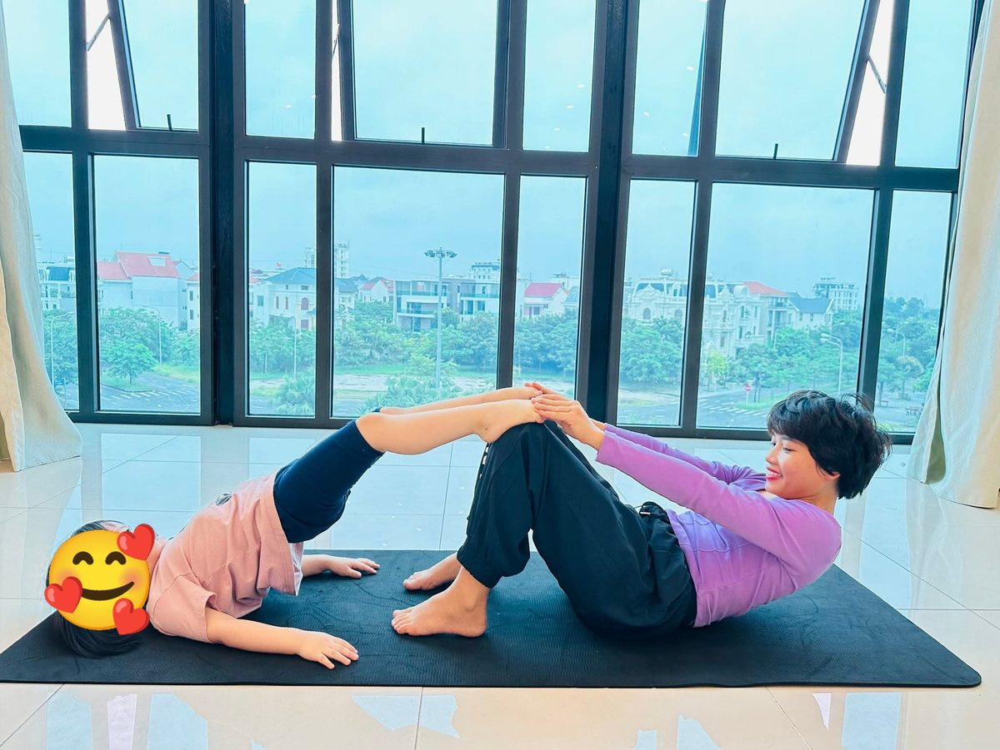
3Cây cầu gác lên núi
🧘 Tư thế Cây cầu đôi (Partner Bridge)
👩👧 Bố mẹ (cô) và bé · Mức độ: Dễ
Câu hô: “Ô tô sắp qua cầu rồi. Cầu ơi, nâng lên nào!”
Cách làm: Mẹ ngồi co gối, ngả người ra sau một chút: đó là ngọn núi. Bé nằm ngửa, đầu ở xa mẹ, đặt hai bàn chân lên đầu gối mẹ. Mẹ nắm nhẹ cổ chân bé. Bé hít vào nâng hông lên, thở ra hạ xuống. Ba lần là đủ.
Cô lưu ý: Khi bé đang nâng hông, cô dặn bé nhìn lên trần, không quay đầu sang bên.
-
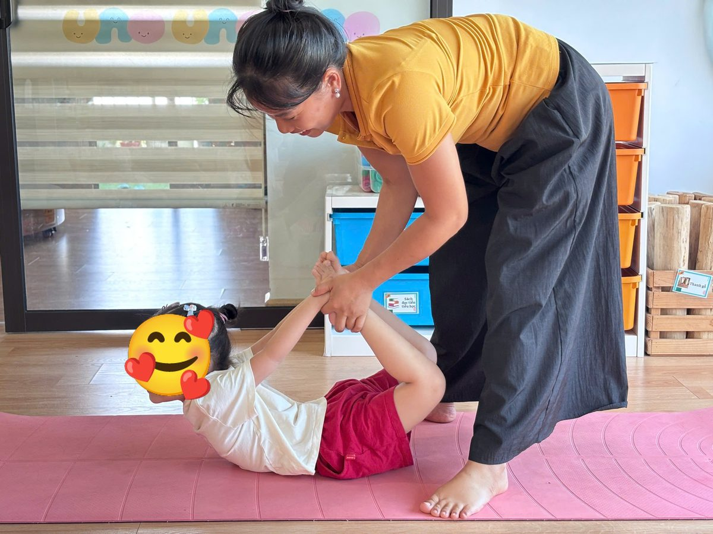
4Em bé ôm chân
🧘 Tư thế Em bé vui vẻ có người đỡ (Assisted Happy Baby)
👩👧 Bố mẹ (cô) và bé · Mức độ: Dễ
Câu hô: “Em bé nằm nôi, hai tay ôm hai bàn chân. Lắc lư, lắc lư.”
Cách làm: Bé nằm ngửa, co hai gối về phía ngực. Mẹ đứng phía chân bé, cúi xuống, đưa tay bé tới nắm bàn chân. Bé lắc lư người sang hai bên như em bé nằm nôi. Năm nhịp thở rồi buông chân, duỗi dài người ra.
Cô lưu ý: Người lớn chỉ giúp tay bé tìm tới chân, không ấn chân bé xuống sàn.
-
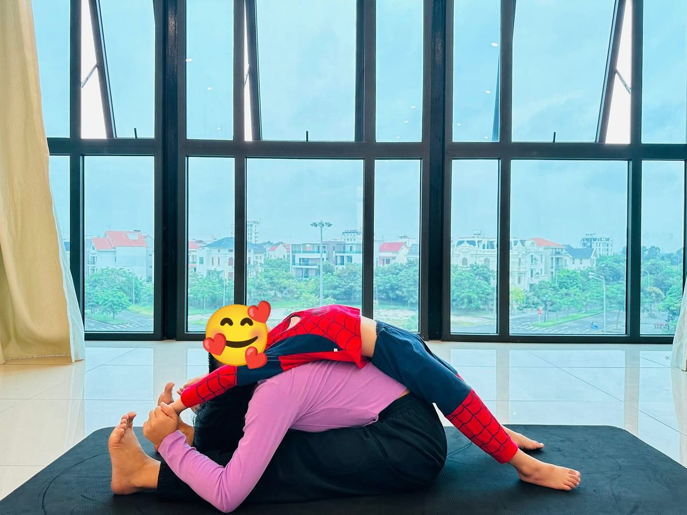
5Cầu vồng trên lưng mẹ
🧘 Tư thế Gập người và ngả lưng (Forward Fold with Supported Backbend)
👩👧 Bố mẹ (cô) và bé · Mức độ: Vừa
Câu hô: “Mẹ là ngọn đồi. Con nằm ngửa trên đồi, nhìn lên bầu trời.”
Cách làm: Mẹ ngồi duỗi chân, cúi gập người về trước, tay ôm bàn chân. Bé ngồi sát lưng mẹ, quay lưng lại, rồi từ từ ngả người nằm ngửa lên lưng mẹ. Hai tay bé vươn qua đầu, chạm chân mẹ nếu với tới. Hai mẹ con cùng thở. Lưng mẹ được kéo dài, ngực bé được mở ra.
Cô lưu ý: Bé ngả xuống thật chậm. Lúc dậy, bé trượt sang một bên rồi mới ngồi lên, mẹ chưa ngẩng người vội.
-
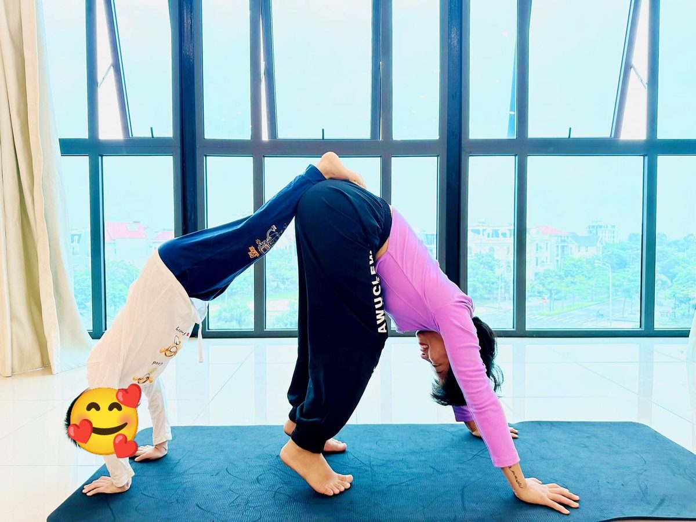
6Núi mẹ, núi con
🧘 Tư thế Chó úp mặt đôi (Double Downward Dog)
👩👧 Bố mẹ (cô) và bé · Mức độ: Vừa
Câu hô: “Núi mẹ cao, núi con nhỏ. Hai ngọn núi đứng cạnh nhau.”
Cách làm: Mẹ vào tư thế Chó úp mặt, hai chân rộng bằng hông. Bé đứng trước hai tay mẹ, quay lưng về phía mẹ, chống tay xuống thảm cách tay mẹ chừng một bước chân. Rồi bé bước từng chân lên, đặt bàn chân lên hông mẹ. Ba nhịp thở. Bé bước xuống từng chân một.
Cô lưu ý: Bàn chân bé đặt trên xương hông của mẹ, không đặt giữa eo. Bé xuống hẳn rồi mẹ mới hạ gối.
-
🚂Ảnh đang cập nhật7
Đường hầm bí mật
🧘 Tư thế Đường hầm (Downward Dog Tunnel)
👫 Bé + người lớn
Câu hô: “Tu tu, tàu hỏa chui qua đường hầm!”
Cách làm: Người lớn làm tư thế Chó úp mặt (chống tay và chân, mông đưa lên cao thành hình chữ V ngược). Bé bò chui qua “đường hầm” dưới bụng người lớn. Đổi: bé làm đường hầm nhỏ, người lớn chui ngón tay hoặc ô tô đồ chơi qua.
Người đỡ lưu ý: Người lớn giữ yên, không hạ người xuống khi bé đang ở dưới.
-
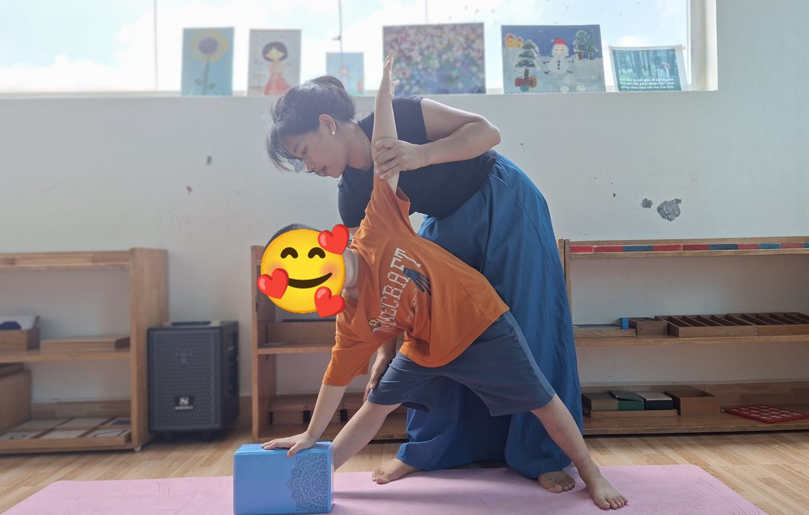
8Tam giác tựa lưng mẹ
🧘 Tư thế Tam giác có người đỡ (Assisted Triangle)
👩👧 Bố mẹ (cô) và bé · Mức độ: Vừa
Câu hô: “Một tay chạm đất, một tay chạm trời.”
Cách làm: Bé đứng dạng chân rộng, bàn chân trước xoay ra ngoài, một viên gạch tập đặt cạnh bàn chân trước. Mẹ đứng sát sau lưng bé làm chỗ tựa. Bé nghiêng người, tay dưới chống lên gạch, tay trên vươn lên trần, mẹ đỡ nhẹ cổ tay trên. Ba nhịp thở rồi đổi bên.
Cô lưu ý: Lưng bé tựa vào người lớn nên bé không bị đổ về trước. Có gạch tập, bé không phải cúi quá thấp.
-
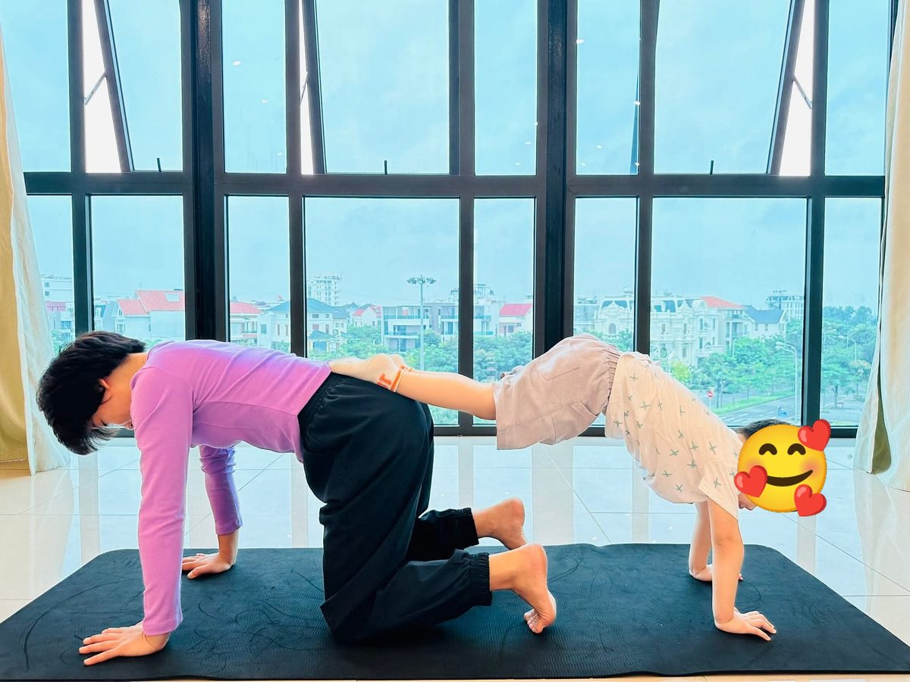
9Cầu trượt sau lưng mẹ
🧘 Tư thế Ván nghiêng trên lưng (Incline Plank on Partner)
👩👧 Bố mẹ (cô) và bé · Mức độ: Vừa
Câu hô: “Cầu trượt dựng xong rồi! Con trượt xuống nào.”
Cách làm: Mẹ quỳ bốn chân thành một chiếc bàn, lưng phẳng. Bé đứng sau mông mẹ, quay lưng lại, chống hai tay xuống thảm, rồi lần lượt gác từng bàn chân lên hông mẹ. Người bé thành một con dốc nghiêng. Giữ ba nhịp thở.
Cô lưu ý: Bé thấy mỏi tay là hạ chân xuống ngay, không cần cố.
-
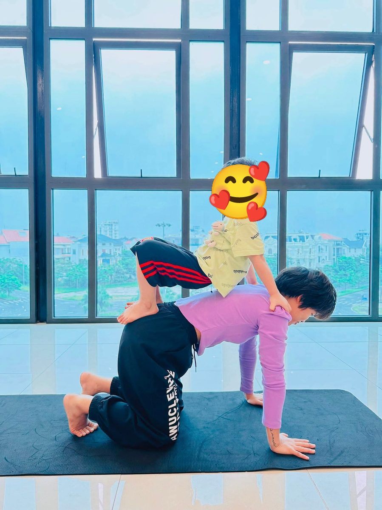
10Cưỡi ngựa đi chơi
🧘 Tư thế Ngựa và người cưỡi (Horse and Rider)
👩👧 Bố mẹ (cô) và bé · Mức độ: Vừa
Câu hô: “Lộc cộc, lộc cộc. Ngựa ơi đi chậm thôi!”
Cách làm: Mẹ quỳ bốn chân, tay thẳng dưới vai, gối dưới hông. Bé trèo lên, quỳ hai gối trên hông mẹ, hai tay đặt lên vai mẹ, ngồi thẳng lưng. Mẹ đung đưa người thật nhẹ như ngựa đang đi. Bé nào cũng cười ở tư thế này.
Cô lưu ý: Mẹ giữ yên tay chân, không bò đi khi bé đang ở trên. Gối bé đặt trên hông, không đè giữa lưng.
-
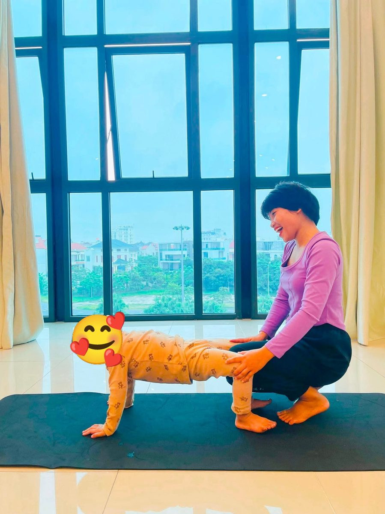
11Xe cút kít
🧘 Tư thế Xe cút kít (Wheelbarrow)
👩👧 Bố mẹ (cô) và bé · Mức độ: Vừa
Câu hô: “Xe cút kít chở rau ra chợ. Đi chậm kẻo rơi rau!”
Cách làm: Bé nằm sấp, chống hai tay dưới vai. Mẹ ngồi xổm phía sau, đỡ hai đùi bé gần đầu gối rồi nâng lên ngang hông mình. Bé giữ người thẳng như tấm ván. Nếu bé khỏe, bé đi tay về trước ba bốn bước.
Cô lưu ý: Với bé nhỏ, cô đỡ ở đùi gần gối chứ không cầm cổ chân. Bé mỏi là hạ chân xuống trước, rồi bé mới nằm.
-
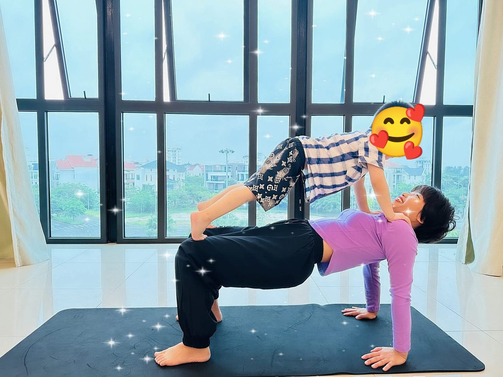
12Mèo con trèo lên bàn
🧘 Tư thế Bàn ngửa đôi (Reverse Table with Child)
👩👧 Bố mẹ (cô) và bé · Mức độ: Khó
Câu hô: “Mèo con trèo lên bàn, nhìn mẹ cười một cái.”
Cách làm: Mẹ ngồi, chống hai tay ra sau lưng, bàn chân đặt trên thảm, rồi đẩy hông lên thành chiếc bàn ngửa. Bé trèo lên, quỳ trên hông mẹ, hai tay vịn vai mẹ. Hai mẹ con nhìn nhau. Hai nhịp thở thôi.
Cô lưu ý: Tư thế này nặng cho cổ tay và lưng mẹ. Cô chỉ làm với bé nhỏ, nhẹ cân, và mẹ hạ hông trước khi thấy mỏi.
-
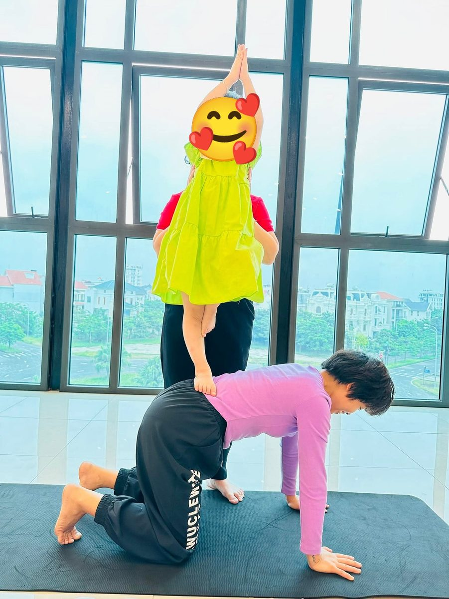
13Cây non trên núi
🧘 Tư thế Bé đứng trên lưng mẹ (Standing on Table)
👩👧 Bố mẹ (cô) và bé · Mức độ: Khó
Câu hô: “Cây non mọc trên núi, vươn lên đón nắng.”
Cách làm: Mẹ quỳ bốn chân thật vững. Một người lớn thứ hai nắm tay bé, đỡ bé bước lên, mỗi bàn chân đặt trên một bên hông mẹ. Bé đứng thẳng, chắp tay trên đầu. Hai nhịp thở rồi người đỡ bế bé xuống.
Cô lưu ý: Luôn có người thứ hai đứng sát bé. Chân bé đặt trên xương hông, không đứng giữa lưng hay eo mẹ.
-
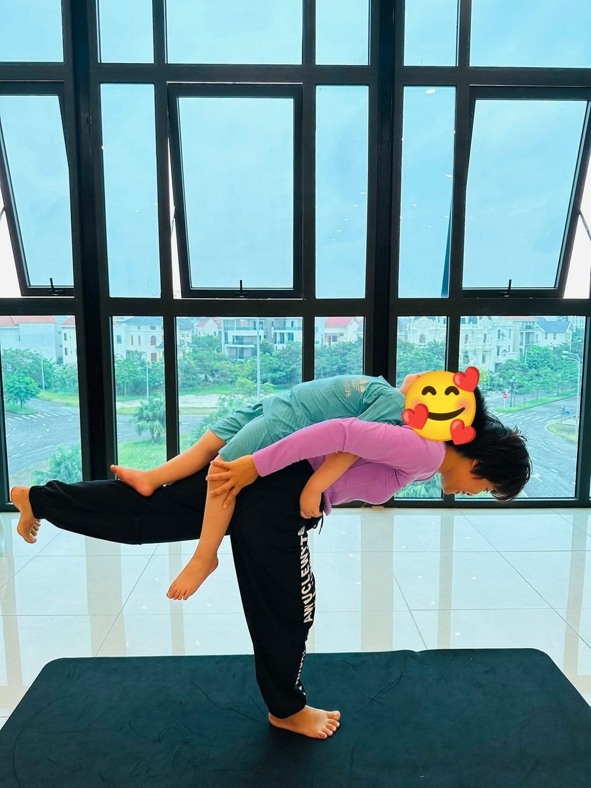
14Máy bay chở bé
🧘 Tư thế Chiến binh 3 cõng bé (Warrior III with Child)
👩👧 Bố mẹ (cô) và bé · Mức độ: Khó
Câu hô: “Máy bay cất cánh! Hành khách nhỏ ôm chặt mẹ nhé.”
Cách làm: Mẹ cõng bé trên lưng, tay giữ chắc chân bé. Rồi mẹ từ từ nghiêng người về trước, một chân duỗi thẳng ra sau, thành chiếc máy bay. Bé nằm trên lưng mẹ, ôm vai mẹ. Ba nhịp thở. Mẹ hạ chân, đứng thẳng lại rồi mới cho bé xuống.
Cô lưu ý: Chỉ làm khi mẹ đã đứng vững Chiến binh 3 một mình. Lần đầu nên tập gần tường hoặc có người đứng cạnh.
-
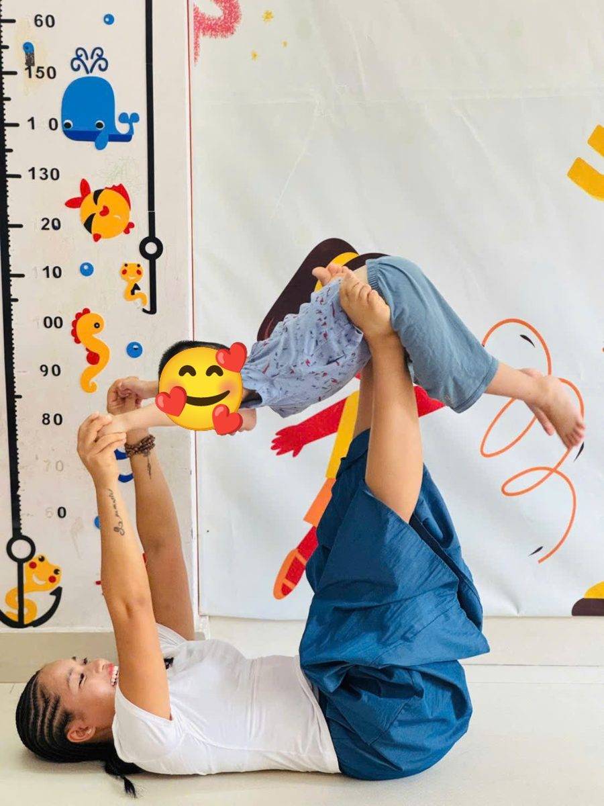
15Chú chim bay trên chân mẹ
🧘 Tư thế Chim bay (Front Bird (Partner Airplane))
👩👧 Bố mẹ (cô) và bé · Mức độ: Khó
Câu hô: “Chim non vỗ cánh. Bay lên, bay lên nào!”
Cách làm: Mẹ nằm ngửa, co gối. Bé đứng ở phía chân mẹ, mặt hướng về mẹ. Mẹ đặt hai bàn chân lên hông bé, nắm hai tay bé, rồi từ từ duỗi chân nâng bé lên. Khi bé đã nằm vững trên chân mẹ, mẹ đỡ hông bé để bé dang tay như cánh chim.
Cô lưu ý: Cô chỉ nâng bé thấp, sát mặt thảm. Mẹ giữ tay bé cho tới khi bé tự tin rồi mới buông.
-
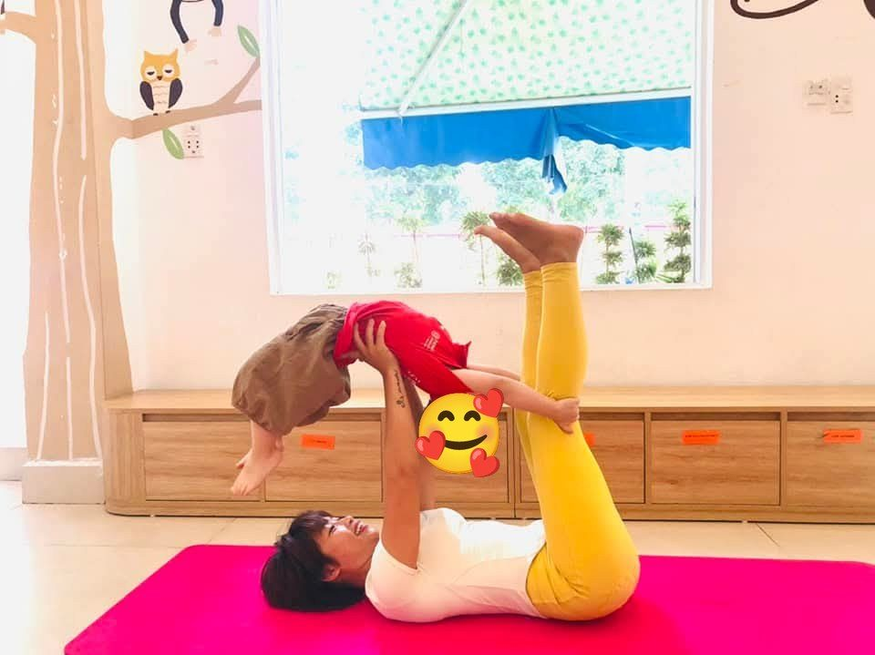
16Chim bay ngửa
🧘 Tư thế Chim bay ngửa (Back Bird)
👩👧 Bố mẹ (cô) và bé · Mức độ: Khó
Câu hô: “Chim nằm ngửa ngắm mây trôi.”
Cách làm: Đây là tư thế cô để cuối. Mẹ nằm ngửa, bé đứng quay lưng về phía chân mẹ. Mẹ đặt bàn chân vào lưng dưới của bé, hai tay đỡ vai bé, rồi từ từ duỗi chân, để bé ngả lưng ra sau thành một chiếc cầu vồng trên không. Hai nhịp thở rồi hạ bé xuống, chân bé chạm thảm trước.
Cô lưu ý: Chỉ làm khi hai mẹ con đã quen Chim bay và bé thật sự thích lộn ngược. Bé nói dừng là hạ ngay.
7. Yoga đôi các con với nhau: 10 tư thế
Ảnh các bé tập cùng nhau đang được cập nhật dần.
Hai bạn nhỏ tập cùng nhau thì không ai nâng ai. Cô ghép hai bạn cao và nặng gần bằng nhau, chọn tư thế cân bằng hai bên, tập xong thì đổi vai. Các tư thế này bố mẹ tập cùng con cũng được.
-
 1
1Thuyền đôi ra khơi
🧘 Tư thế Thuyền đôi (Partner Boat)
👫 Hai bé hoặc bé + người lớn
Câu hô: “Thuyền ơi ra khơi! Một, hai, ba, nhấc chân lên nào!”
Cách làm: Ngồi đối diện, co gối, áp hai bàn chân vào bàn chân bạn, nắm tay nhau. Ngả người ra sau một chút, cùng từ từ nhấc chân lên cao, duỗi thẳng nếu được. Giữ 3 đến 5 nhịp thở rồi hạ chân xuống cùng lúc.
Người đỡ lưu ý: Người lớn nắm cổ tay bé và giữ thân vững để bé dựa vào.
-
🪞Ảnh đang cập nhật2
Gương soi thần kỳ
🧘 Tư thế Chào nhau đôi (Partner Namaste)
👫 Bé + người lớn hoặc hai bé
Câu hô: “Gương ơi gương, bạn làm gì thì mình làm theo nhé!”
Cách làm: Hai người ngồi xếp bằng đối diện, áp hai lòng bàn tay vào nhau. Một người từ từ đưa tay lên, xuống, sang ngang, người kia làm theo như soi gương. Đổi người dẫn. Kết thúc bằng chắp tay chào “Namaste”.
Người đỡ lưu ý: Người lớn đưa tay thật chậm để bé theo kịp.
-
🍄Ảnh đang cập nhật3
Hai cây nấm tựa lưng
🧘 Tư thế Tựa lưng thở đôi (Partner Back-to-Back)
👫 Bé + người lớn hoặc hai bé
Câu hô: “Hít vào, lưng mình phồng lên. Thở ra, lưng mình xẹp xuống. Con có nghe lưng bạn thở không?”
Cách làm: Ngồi xếp bằng, tựa lưng vào nhau, lưng thẳng. Cùng nhắm mắt, hít vào thở ra thật chậm 5 lần, cảm nhận lưng người kia phồng lên xẹp xuống.
Người đỡ lưu ý: Người lớn ngồi thấp xuống (kê mông lên gối) để lưng hai người áp vừa nhau.
-
🌳Ảnh đang cập nhật4
Hai cây cổ thụ
🧘 Tư thế Cây đôi (Partner Tree)
👫 Hai bé hoặc bé + người lớn
Câu hô: “Rễ cây bám chặt đất, cành cây vươn lên trời. Gió thổi cây vẫn đứng vững!”
Cách làm: Đứng cạnh nhau, khoác tay hoặc áp lòng bàn tay phía trong vào nhau. Mỗi người co chân phía ngoài, đặt bàn chân vào bắp chân hoặc đùi chân trụ, tay ngoài đưa lên cao. Giữ 3 đến 5 nhịp thở rồi đổi bên.
Người đỡ lưu ý: Hai người vịn nhau làm điểm tựa. Bé nhỏ có thể chỉ kiễng gót chân.
-
🌈Ảnh đang cập nhật5
Cầu vồng đôi
🧘 Tư thế Nghiêng người đôi (Partner Side Bend)
👫 Bé + người lớn hoặc hai bé
Câu hô: “Sau cơn mưa, cầu vồng bảy màu hiện ra trên trời!”
Cách làm: Đứng cạnh nhau, hông cách nhau một bước, nắm tay phía trong. Tay phía ngoài vươn cao qua đầu và nghiêng người về phía bạn để hai bàn tay ngoài chạm nhau, tạo thành một chiếc cầu vồng. Giữ 3 nhịp thở rồi đổi bên.
Người đỡ lưu ý: Người lớn hơi khuỵu gối cho vừa chiều cao với bé.
-
🏠Ảnh đang cập nhật6
Ngôi nhà chung
🧘 Tư thế Mái nhà đôi (Partner Roof)
👫 Hai bé hoặc bé + người lớn
Câu hô: “Nhà mình có mái thật chắc, ai cũng được che mưa che nắng!”
Cách làm: Đứng đối diện, cách nhau một sải tay. Áp hai lòng bàn tay vào tay bạn ở trên cao, rồi cùng lùi chân từng bước nhỏ, cúi người về trước thành mái nhà hình tam giác. Giữ 3 nhịp thở rồi bước lại gần nhau.
Người đỡ lưu ý: Đẩy tay đều nhau, không ai dồn sức vào người kia.
-
🦋Ảnh đang cập nhật7
Hai chú bướm hôn nhau
🧘 Tư thế Con bướm đôi (Partner Butterfly)
👫 Hai bé hoặc bé + người lớn
Câu hô: “Bướm bay, bướm bay, cánh bướm vỗ nhẹ nhàng!”
Cách làm: Ngồi đối diện, mỗi người áp hai lòng bàn chân vào nhau thành con bướm, đầu gối chạm đầu gối bạn. Nắm tay nhau, cùng đập nhẹ hai gối như cánh bướm. Sau đó cùng cúi người về trước chạm trán nhau.
Người đỡ lưu ý: Không ấn gối bé xuống. Để bé tự đập cánh theo sức mình.
-
🎁Ảnh đang cập nhật8
Trao quà sau lưng
🧘 Tư thế Vặn mình đôi (Partner Seated Twist)
👫 Bé + người lớn hoặc hai bé
Câu hô: “Mình có một món quà bí mật, mình xoay người trao cho bạn nhé!”
Cách làm: Ngồi xếp bằng tựa lưng vào nhau. Hít vào vươn cao lưng. Thở ra, cùng xoay người sang phải: tay phải đặt lên đầu gối trái của bạn, tay trái đặt lên đầu gối phải của mình. Giữ 3 nhịp thở rồi đổi bên.
Người đỡ lưu ý: Xoay nhẹ nhàng theo hơi thở, không vặn mạnh.
-
🪑Ảnh đang cập nhật9
Hai chiếc ghế tựa lưng
🧘 Tư thế Ghế đôi (Partner Chair)
👫 Hai bé cùng chiều cao
Câu hô: “Một, hai, ba, ngồi xuống ghế! Ghế ơi đừng đổ nhé!”
Cách làm: Đứng tựa lưng vào nhau, khoác tay. Cùng bước chân ra trước một chút rồi từ từ khuỵu gối, tựa lưng vào bạn như ngồi lên ghế. Giữ 3 nhịp thở rồi cùng đứng lên.
Người đỡ lưu ý: Chỉ ghép hai bé cao và nặng gần bằng nhau. Người lớn đứng cạnh đỡ.
-
⭐Ảnh đang cập nhật10
Ngôi sao đôi
🧘 Tư thế Thư giãn sao biển đôi (Partner Starfish Relaxation)
👫 Bé + người lớn hoặc hai bé
Câu hô: “Hai ngôi sao nằm cạnh nhau trên bãi biển, nghe sóng vỗ rì rào…”
Cách làm: Nằm ngửa, đầu hướng về nhau (đỉnh đầu gần chạm nhau), dang tay chân như sao biển, tay nắm nhẹ tay bạn. Nhắm mắt, thở chậm 1 đến 2 phút. Kết thúc: ngồi dậy, nhìn nhau, nói “Cảm ơn bạn!”
Người đỡ lưu ý: Người lớn nói nhỏ, kể chậm để bé thư giãn.
🌟 Bài học yoga trong yoga đôi
Ahimsa – Yêu thương, không làm đau ai: đỡ bạn nhẹ nhàng, dừng khi bạn nói “dừng”.
Santosha – Vui với những gì mình có: tư thế chưa đẹp cũng không sao, vui vì được tập cùng nhau.